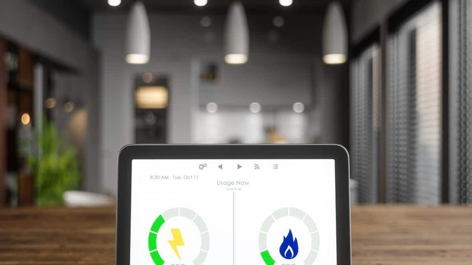

I was talking to a client in Hawaii last year. Her electric bill was $450 for a small two‑bedroom condo. She used air conditioning maybe two hours a day. She had LED bulbs. She was careful. She thought she was doing something wrong. I asked her what she paid per kilowatt‑hour. She said around $0.42. I nearly dropped the phone. That’s not her fault. That’s Hawaii.
Electricity rates vary wildly across the United States. In Louisiana, the average residential rate is about $0.10 per kWh. In Hawaii, it’s over $0.40. That’s a factor of four. A family using 1,000 kWh per month in Louisiana pays $100. The same family in Hawaii pays $420. Same usage, different location. If you live in a high‑rate state, energy efficiency and solar pay off much faster. If you live in a low‑rate state, it’s harder to justify big investments.
Let me give you the lay of the land. Based on the latest Energy Information Administration data, the cheapest states for electricity are Louisiana ($0.100), Washington ($0.103), Arkansas ($0.105), Oklahoma ($0.106), Idaho ($0.107), Utah ($0.108), Kentucky ($0.109), West Virginia ($0.110), Wyoming ($0.111), and Missouri ($0.112). These are mostly states with access to cheap hydropower (Washington, Idaho) or cheap natural gas and coal (Louisiana, Arkansas, Oklahoma, Kentucky, West Virginia, Wyoming, Missouri, Utah). If you live in any of these states, your electric bill is likely not your biggest burden.
TOU Optimizer
Shift usage to cheaper hours and save
All data stays in your browserThe most expensive states are Hawaii ($0.424), California ($0.274), Massachusetts ($0.269), Rhode Island ($0.259), Connecticut ($0.258), New Hampshire ($0.252), New York ($0.237), Vermont ($0.227), Maine ($0.226), and Alaska ($0.222). Some of these are islands or remote areas (Hawaii, Alaska). Most are in New England or the mid‑Atlantic, where natural gas pipelines are constrained and renewable mandates have driven up costs. California is a special case: high transmission costs, wildfire liability, and a complex rate structure.
Now, here’s what you need to know about your own bill. You might live in a state with a low average rate, but your utility might charge higher than the state average. For example, in Texas, which has a deregulated market, rates vary widely. In Houston, you can find plans for $0.12 per kWh. In parts of west Texas, you might pay $0.16. In rural areas served by cooperatives, rates can be even higher.
Also, the average rate hides the fixed fees. I’ve seen bills in California where the average rate is $0.27, but the marginal cost of an extra kWh is only $0.20 because of high fixed charges. That changes the math for solar and efficiency.
So how do you know if you’re paying too much? First, compare your rate to your state’s average. If you’re in a deregulated state, shop around. In Texas, you can switch providers easily. In Pennsylvania, Ohio, Illinois, and several other states, you can choose your supplier. The utility still delivers the power, but you buy the electricity from a third party. Sometimes you can save 10‑20% just by switching.
But be careful. Some suppliers have teaser rates that jump after a few months. Read the fine print. Look for the “price to compare” on your utility bill. That’s the rate your utility charges. If a supplier offers less than that, it might be worth it. But if they add a monthly fee or a cancellation penalty, maybe not.
If you’re in a regulated state like Florida or Georgia, you have no choice. Your utility is your only option. Then you need to focus on reducing your usage or installing solar.
Let me give you a real comparison. I have a client named Brian in upstate New York. His rate is $0.21 per kWh. He installed solar panels. His system cost $18,000 after incentives. He saves about $1,800 per year. Payback 10 years. His sister in Louisiana pays $0.10 per kWh. A similar system would cost $18,000 but save only $900 per year. Payback 20 years. Same equipment, different payback because of the rate.
That’s why I always tell people to check their rate before calling a solar installer. If you’re paying less than $0.12 per kWh, solar might still make sense if you have a good roof and good net metering. But the payback will be longer. If you’re paying more than $0.20 per kWh, solar is a no‑brainer in many states.
But rates aren’t the only thing. Delivery charges, demand fees, minimum bills, and net metering policies all matter. In California, even though the rate is high, NEM 3.0 makes solar less attractive without batteries. In Colorado, the rate is moderate ($0.14), but 1:1 net metering makes solar attractive.
Bill Breakdown
Break down your monthly electric bill by category
All data stays in your browserSo here’s a simple test. Look at your monthly bill. Find the supply rate. If it’s above $0.15, you’re in a relatively high‑cost state. If it’s above $0.20, you’re in a very high‑cost state. If it’s below $0.10, you’re in a low‑cost state. Then think about your usage. Do you have an old AC? Electric heat? An EV? Those will drive your bill up.
Another factor is climate. In the South, you use a lot of AC. In the North, you use a lot of heat. But the rate might be lower. So your total bill might be similar to someone in a high‑rate state with less usage.
Let me show you some typical annual bills for different states. A family using 10,000 kWh per year in Louisiana pays about $1,000. The same family in Hawaii pays $4,200. In New York, about $2,400. In Texas, about $1,300. In California, about $2,700. That’s a huge range.
Now, what can you do about it? If you live in a high‑rate state, every efficiency upgrade pays back faster. LED bulbs? Definitely. Insulation? Yes. Heat pump water heater? Probably. Solar? Almost certainly. If you live in a low‑rate state, focus on cheap measures first. LEDs. Air sealing. Thermostat adjustments. Vampire device hunting. Those still pay back even when rates are low.
If you live in a deregulated state, shop around every year. Set a calendar reminder. Compare rates. Switch if you can save $10 per month. That’s $120 a year for ten minutes of work.
I had a client in Ohio who had been on the same utility rate for 8 years. He was paying $0.10 per kWh. The market rate had dropped to $0.07. He switched. His annual bill dropped from $1,200 to $840. That’s $360 a year. For one phone call.
On the other hand, I had a client in Georgia who complained about his rate. I checked. He was paying $0.11. That’s below the national average. I told him to stop complaining and focus on his usage. He had an old AC. We replaced it. His bill dropped $50 a month. That’s a better return than fighting the rate.
I have a tool that helps you compare your rate to the national and state averages.